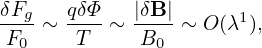

The evolution of the macroscopic quantity Fg is governed by Eq. (53), i.e.,
|
| (68) |
where the left-hand side is written as
![∂Fg ∂X ∂Fg ∂V ∂Fg
LgFg = -∂t-+ -∂t ⋅∂X--+ ∂t-⋅-∂V-
∂Fg ∂Fg
+ (v∥e∥ + VE0)⋅ ∂X-+ v ⋅[(λB1 + λB2)Fg]− Ω ∂α--
q (v⊥ ∂Fg eα ∂Fg)
+ --E0 ⋅ -------+ -------
m B0 ∂μ v⊥ ∂α](nonlinear_gyrokinetic_equation75x.png)
 | (69) |
i.e., Fg0 is independent of the gyro-angle α. The balance on O(λ1) gives
 | (70) |
Performing averaging over α, ∫ 02π(…)dα, on the above equation and noting that Fg0 is independent of α, we obtain
|
| (71) |
Note that a quantity A = A(x) that is independent of v will depend on v when transformed to guiding-center coordinates, i.e., A(x) = Ag(X,v). Therefore Ag depends on gyro-angle α. However, since ρi∕L ≪ 1 for equilibrium quantities, the gyro-angle dependence of the equilibrium quantities can be neglected. Specifically, e∥, B0 and Ω can be considered to be independent of α. As to v∥, we have v∥ = ±. Since B0 is considered independent of α, so does v∥. Using these results, equation (71) is written
 | (72) |
Using E0 = −∇Φ0, the above equation is written as
|
| (73) |
Note that
 | (74) |
where the error is of O(λ2)Φ0, and thus, accurate to O(λ), the last term of equation (73) is zero. Then equation (73) is written as
 | (75) |
which implies that Fg0 is constant along a magnetic field line.